ImageMagick Examples --
 Compositing Images
Compositing Images
- Index
-
 ImageMagick Examples Preface and Index
ImageMagick Examples Preface and Index
-
 Image Composition in IM
Image Composition in IM
-
Positioning The Overlay Image
-
Raw Tables of Compose Methods (Separate Page)
-
Duff-Porter Alpha Composition Methods
-
Mathematical Compose Methods
-
Lighting Composition Methods (Light, Dodge, Burn)
-
Channel Copying Methods
-
Dissolve one Image Over Another
-
Blend two images together
-
Watermark or Modulate Image
-
Using a Mask to Limit Composed Area
-
Composite using Image Tiles
-
Special Composition Methods
-
Image Mapping Composition Methods
magick composite" command. It may also be performed as either part of a larger sequence of operations or internally by other image operators.
Image Composition in IM
Image Composition is the process of merging two (and only two) images in a variety of ways. It is associated with Alpha Composition which describes the result based on which part of the overlay is transparent. Image Composition is used for blending and averaging images, transfering image channels, cutting, joining, or layering odd shaped segments of images. Or, as part of complex mathematical operations. A good alternate introduction on Image Composition is SVG Compositing in 30 Minutes. Or you can discover precise mathematical details by reading the SVG Alpha Compositing page, which describes the more important image composition methods. The following commands are the two direct image 'composite' methods available in ImageMagick...
magick composite {overlay} {background} [{mask}] [-compose {method}] {result}
magick {background} {overlay} [{mask}] [-compose {method}] -composite {result}
|
magick composite" command is the conventional method of compositing in IM. Having a dedicated command demonstrates just how important Image Composition is. The "magick" operator "-composite" can also do Image Composition as part of a larger image processing task. </> Note the reversed order of the images when using "magick". The order is practical as you are generally working with a primary canvas over which you prepare and merge images forming a new image. The order of the images is important. Practical examples of both techniques (and more) can be reviewed in Layers of Multiple Images, and is recomended reading before continuing.
Definition and Terms
The more important image is the background image, also often called the destination image, is the image that is modified by Image Composition. The background sets not only the final size of the Image Composition but meta-data, such as 'comments', 'labels', 'density', 'profiles' and so on, are also preserved. It's position is fixed and usually forms the canvas which you are building, thus the name background. Remember this!The overlay image, or source image, controls how the "-compose" method should modify the fixed background or destination image. The image can be re-positioned relative to the fixed background image (usually using "-geometry" and "-gravity" settings). However, both the overlay image and any meta-data it contains, is deleted when the composite operation is finished.
compose:outside-overlay" (see Outside-Overlay Setting), can be set to a value of 'false' to disable any modification to the background image outside the rectangular area that the overlay image covers. Without this, some composition methods will clear the areas not covered by the overlay, as part of the compose definition.The actual composition method is controlled by the "
-compose" setting, which defaults to a value of 'Over'. That is, the source image is drawn Over the background image, which is what most people think of when they perform image composition. Most of this section of IM Examples is used to detail what the various composition 'methods' do and how you can make use of them. To view the results of the compose methods see Tables of Compose Methods. The tables do not illustrate the method's intended use, just the raw output from various test images. The compose method is case-insensitive and the '_' or '-' characters are optional. As such the compose method "Dst_Over" can also be specified as: "dst_over", "dst-over", "DstOver", "dstover", or even "dstOVER". They all mean the same thing. Also, the compose methods: 'Over', 'ATop', 'In' and 'Out' are short for the more verbose compose method names: 'Src_Over', 'Src_ATop', 'Src_In' and 'Src_Out'. On top of the long list of "-compose" methods there are some that require extra numerical arguments to work correctly. In the "magick composite" command these arguments are passed using the special options: "-dissolve", "-blend", "-watermark" ('modulate'), "-displace" and "-distort". As of IM v6.5.3-4, the "magick" command can pass special arguments to the "-composite" operator by using the Define Setting, "compose:args". For examples, see the special Dissolve and Blend methods below.
Image Composition Operators
Apart from the direct two image compositing styles shown above, there are a number of other image operations that also use alpha compositing as part of their internal image processing. These operations are affected by the current "-compose" setting, though they will use either their own internal positioning, or a Layered Image virtual canvas offset positioning technique. Here is a list of all operators that are known to be affected by the compose setting...
- Composition of Pairs of Images
- Practical examples using the primary image composition operators, both the primative "
magick composite" command, as well as the -composite" operator for "magick". This low-level methods uses Geometry/Gravity Settings to determine the position of the overlay image.- Layering Operators
- The image 'layerimage' operators "
flatten", "mosaic", and "-layers merge" overlay all multiple images in the current image sequence, onto a single new canvas, the size and position of which is determined by the layering operator chosen. This uses Virtual Canvas/Page Offset Settings to determine the position of the overlay image.- Edge Expansion Operators
- Operators that overlay each individual image on internally prepared canvases. This includes operators such as "
-border", "-frame", and "-extent". (See Adding/Removing Image Edges).No positioning information is used, though "-extent" will make use of gravity and geometry offsets, to overlay on a solid color background image.- Draw Images
- The "
-draw 'image...'" image overlay method will overlay a single external source image over a list of destination images. It is the only image composition technique available to "mogrify". It gets the 'overlay' image from an external source allowing it to overcome that command's no-list-operator limitation. Resize and Position information is also given by the user, and these may be gravity effected.- Multi-List Layers Composite
- The "
-layers composite" operator will let you compose two separate multiple image lists together, one pair of images at a time, to form a new merged multi-image sequence. It also composes a sequence of images with a single image (which can be either a static 'overlay' image, or a static 'destination' image). It is also the ONLY composition operator to allow you to use BOTH the universal "-gravity" affected "-geometry" offset (globally), and the virtual canvas "-page" offsets of individual images, from that global position. This composition operator is especially important for composing Image Animations, or other image sequences, as a whole, rather than needing a script to process each pair of images at a time.
Positioning The Overlay Image
Composite Geometry/Gravity Settings
In normal Alpha Composition the "-geometry" setting is used with "-gravity" to position the source image relative to the destination image. Using these settings is covered in great detail in Image Positioning using Gravity.Note that the size component of "-geometry" is special in that it will Resize an Image (geometry). In "composite" it resizes the source image but for "convert" the last image in the image sequence is resized. This is technically a separate aspect to Image Composition. See Geometry Resize and Layering images with Composite. In Alpha Composition only two images are involved, the 'source' and the 'destination' (or 'background'), though a third Masking Image may also be provided limiting the affected area of the composition.
Layer Canvas/Page Offsets
The composition of Layered Images use a very different philosophy. All the images (as many as you like) are treated equally in the order given. They all have a "-page" or Page Offset that position each image's top-left corner relative to a virtual canvas 'origin' (the default offset) but without gravity. To process multiple images a new background image is generated using the current "-background" color with a size that is dependent on the operation being performed. This is assumed to be the 'destination' image (canvas). ALL the images are composited onto this new canvas one at a time in sequence. Even if only two images are given a new image is still created and two separate compositions are applied. That is, it can be slow. All the images are treated as 'source' images and the order they are listed determines the result. The 'layer' offset however is NOT gravity affected. As each image can have a separate 'canvas offset' multiple image composition is better applied using Image Layering Operators as well as Multi-Image Sequence Composition for animations. The two styles are very different positioning techniques and it is important you use the right style for the composition techniques you plan to use.
Both positioning Techniques
Only one composition technique, the multi-image list Layers Composition operator, allows you to use BOTH positioning methods simultaneously. First the two lists are globally positioned using"-geometry" and "-gravity", which is applied to the virtual canvas size of the first image in each list. Then each individual image in the list is offset using "-page" from that global position to determine the final position. Of course if an overlay image does not fit into a specific destination image in the images provided, then it will be clipped by that image. As such it is generally a good idea to only use fully-coalesced images for the destination image(s) to the appropriate size need. The resulting images can of course be trimmed in size again afterwards.Duff-Porter Alpha Composition Methods
The Duff-Porter image composition methods are a traditional set of 12 methods which are very well defined. They are known as Alpha Composition as the images are merged according to some aspect of the image transparency or 'Alpha Channel'. You can find the mathematical definitions for these in the SVG Alpha Compositing document. Here is a classical table showing the results of these 12 methods with two triangular images.Over', and is what most people normally want when composing images. To understand, and remember what each of the above compose methods do, the resulting image would be the same as if you said...
{Source} --{compose_method}--> {background}
ATop' is equivalent to "the overlay image 'ATop' of the background image". Meaning, the background image will keep its 'shape' but the colors of the source image will sit 'on top' of the background. However remember the image order is reversed when using the "magick -composite" operator. These 12 methods define not only which of the two images are 'visible' in the result, but also how it affects the part of the image which is NOT overlaid by the source image. That is, whether the original 'background' is left as is or completely cleared. I purposefully made the 'destination' image in the above table larger so that you can see if the rest of the image was cleared or not. These 'clearing' methods are: 'Src', 'In', 'Dst_In', 'Out', 'Dst_ATop', and 'Clear'. As of IM v6.5.3-4 you can use a Define Setting "compose:outside-overlay=false" to prevent Duff-Porter composition clearing the destination image outside the overlaid area. See examples in 'Copy' and 'Clear' composition methods, and the Outside-Overlay Setting, for details.Note that 'Copy' is a special '13th' composition method provided by IM. Basically is equivalent to an 'Over' composition, but with background clearing in the overlaid area. However in implementation terms it is a 'Src' composition with outside-overlay (or background clearing) disabled.
| ImageMagick v5 and before did not clear any area not overlaid by the source image. This was incorrect handling of the Duff-Porter Composition operators, and was corrected during IM v6 development. |
CopyOpacity' which completely replaces the Alpha Channel of an image, and can make the undefined invisible colors, visible.
Over (overlay image over background)
This is the default compose method, the one everyone thinks of when overlaying an image on top of another image. The overlay image is placed 'over' the background image in the same way as an 'animation cell' or 'overhead transparency' can be placed over a background scene or image. It is so common that I doubt I really need to say much more. So lets present a example of overlaying a single letter image over a background image.
|
![[IM Output]](label_A_white.png) ![[IM Output]](compose_over.gif)
|
-geometry" setting. If it is positioned outside the bounds of the background it will be clipped, or ignored, as appropriate. In this example, the image is overlaid using the "convert -composite" operator, but positioned half way above the background. Note the reversal of the image order.
|
Dst_Over (put image 'under' background)
Like other 'Dst_' methods, this works almost exactly like the 'Src_' version of the method, but with the overlay and background images swapped. As such 'Dst_Over' is equivalent to placing the source overlay image 'under' the destination. The result is that only the parts of our source or overlay image not hidden by the destination or background image will be visible as they peek out from underneath. This is NOT exactly the same as 'Over' with argument images swapped, as the size, positioning and other image meta-data, still comes from the background or destination image. Remember the output image size is the same as the 'background' image, and position of the source image is relative to the background (using "-geometry" and "-gravity"). For example, here we overlay a black 'A; label 'under' our original white A. We can reposition the black A, relative to the white A background. As you can see this is great for adding a hard shadow, without needing to worry about expanding the image size.
|
![[IM Output]](label_A_black.png) ![[IM Output]](compose_under.png)
|
-tile" setting of "magick composite" also makes this form of 'over' very useful as a way to tile underneath an image. For example, tile the built in checkerboard pattern underneath the shadowed letter we just created.
|
Src ('crop' to background image dimensions)
This operator completely replaces the background image with the overlay image. The colors and transparency in the background are completely junked leaving a blank image the same size as the original destination over which is applied the source image. But what good is that? Well, two things.First, you are effectively replacing the background image with the source image but preserving all the meta-data associated with the original background image. That is, the image changes but the meta-data does not. Second, the size of the final image does not change even though the image content does. That is, the resulting image has the same size as the original background. As such you can effectively use this operator to either crop or add a border to the source or overlay image so that it becomes the same size as the given background image (along with the background meta-data). For example, suppose you want to make a plasma image and clip it so it is the same size at the built-in rose image. This will let you do it without needing to know just how big the rose image is.
|
![[IM Output]](compose_crop.gif)
|
-crop" of the plasma image, not a 'resize'. The original image's meta-data is also preserved. That is, even though this is now a plasma image, the image meta-data says it is still a 'rose' image and came from the "rose:" image source.If the overlay is smaller then the rest of the background image is replaced with transparency to fill it out. Please note however that the background must have an alpha channel, or it will fill the extra space with black (the color that '
none' or 'transparent' has without any alpha channel).
|
![[IM Output]](compose_expand.gif)
|
Copy (copy or replace image)
This operator is not one of the 12 'Duff-Porter' compose methods which is why it was not on the chart above. It is very important nevertheless. It works exactly like the "Src" compose method, but it does not touch the background image outside the overlaid area. That is, it limits its copying abilities to just the area overlaid and nothing else. This allows you to crop a small section of a larger image, work on the smaller image for speed, then 'copy' the results back onto the larger image without touching the other areas of that image. This in turn allows you to optimize image processing of very large images. Here is the same example I used above, but using 'Copy' instead of 'Src', showing how IM will not waste time clearing out the rest of the background as demanded by the 'Duff-Porter' algorithm.
|
![[IM Output]](compose_copy.gif)
|
Over', except that the transparency of the source image is also copied, replacing the background image completely. If there is no transparency it would perform exactly like 'Over'. Internally, it modifies the special composition control setting "outside-overlay (See Next).
Outside-Overlay Setting
As of IM v6.5.3-4 the ability to control if a composition method will effect also areas outside the area overlaid was made user controllable by Defining "compose:outside-overlay". It is 'on' by default but you can turn it off by setting it's value to "false". For example, here is an equivalent to the Copy Composition Method but using the more traditional Src Composition Method..
|
![[IM Output]](compose_copy_src.gif)
|
Outside-Overlay vs SVG 'clip-to-self'
The "compose:outside-overlay" define is in many ways similar to using the SVG 'clip-to-self' attribute. Both restricts teh composition to just the region overlaid, without effecting the rest of the destination image. However SVG 'clip-to-self' applies only to the painted area (like a mask), where IM's 'outside-overlay' setting applies to full rectangular area of the source image where it overlay's the background image. This is not very clear in the SVG Composition manual, as the examples given are not explained very well, making them very confusing. But if you want to try to understand them, see SVG Composition 'clip-to-self' property or Understanding SVG 1.2 composition, clip-to-self. Note that a Write Mask can also be used to achieve this type of control, but using shaped areas according to the mask that is given. In this respect it is much more like the SVG 'clip-to-self' attribute, where the source image is also used as the write mask.
Dst (a 'no-op' compose)
This operator does nothing. The source, or overlay image, is completely ignored and the destination, or background image, is left unchanged. The method's real use is as a means of 'turning off' an alpha composition operation in other image operators. For example, we use the Frame Operator to frame our rose image (with a transparent background) but then use "-compose Dst" to prevent the image from being added to the frame. In other words, we only use the rose to set the size of the internal frame of the result. The frame, and only the frame, is the result.
|
![[IM Output]](compose_frame_dst.gif)
|
-bordercolor" defines the color inside the frame which is usually placed underneath the source image. The 'Dst' method can also be useful in a script to disable an alpha composition in a large an complex command without needing to create two different IM commands.
Dst_In (or 'mask' the background with source)
The 'Dst_In' method is like using the source image as a 'Copy_Opacity' mask for the background image. It will remove the overlay image's shape from the background image like a cookie cutter which cuts out a cookie's shape from cookie dough. For example, let's use the fancy 'A' from above as a mask to cut out its shape from the rose image.
|
Copy_Opacity' method you can NOT use a greyscale image as the mask as only the overlay image's alpha channel is used in this operation. Any color in the overlay is completely ignored.
All 'Dst_In and 'Src_In' methods actually does is multipy the alpha channels of the two images. The color of the appropriate image (according to the method) is preserved. |
Dst_Out (or a 'erase' operation)
Using the 'cookie dough' metaphor of 'Dst_In' the result of the 'Dst_Out' method is the dough that was left behind once a cookie has been cut out. It can be used to cut holes, or take bites out of the background image, using the shape of the overlay. Any color in the overlay is again completely ignored.
|
Dst_In' and 'Dst_Out' on the same set of images, you can fit them back together (using 'Plus' method) just like a jigsaw puzzle. For example, here we 'add' (using 'Plus' composition) the last two images we generated above. This image is exactly the same (to the pixel) as the original 'rose:' image.
|
![[IM Output]](compose_rejoin.png)
|
-draw" operation can only add color to an image. It will not remove color once it has been applied to your canvas. Think of a painter who is painting some advertising on a glass door or window. He, or she, can add paint, but can't remove paint, by painting over it. By drawing the shape you want to erase onto a transparent canvas, you can then use 'Dst_Out' to remove it from your working image. It's a bit like our painter carefully wiping off wet paint with a specially shaped rag. The shape can be used to remove all or some of the color making it either fully or semi-transparent. For example, suppose you want to draw a crescent moon symbol on a transparent canvas. This alpha composition method makes this difficult shape easy to draw by overlaying two circles.
|
The second image must be created and drawn in parenthesis. If you don't you will find that "-draw" will draw onto BOTH the overlay image AND your original background which is obviously wrong.
If you did not use parentheses you will find a circle of semi-transparent black pixels around the erased part of the image. I know, it happened to me while creating this example much to my own annoyance. |
ATop ('Over', but clip to background image)
Like 'Over' but limit the result to the original shape of the background image. In other words, the alpha channel on the destination is unchanged but the image colors are overlaid by any non-transparent parts of the source image. If the background image is fully opaque (no transparency), this operation will act exactly like the normal 'Over' composition. It only differs when the background contains transparency which also clips the overlay. What makes this useful is for overlaying lighting and shading effects that are limited to the object (shape) of the destination.
For example, say we have a red circle and want to add a highlight as if it is a 3 dimensional ball. We can create the circle, and the highlight, then overlay the highlight using 'ATop' to limit it to the circle.
|
![[IM Output]](red_circle.png) ![[IM Output]](red_highlight.png) ![[IM Output]](red_ball.png)
|
The creation of the white highlight was done using "-negate" to ensure the whole image is actually white. This was used to avoid a bug in the "-blur" operator, which has now been fixed in IM version 6.2.4. See Blur with Transparency Bug for more details of this old bug. |
|
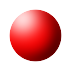 |
ATop' compose method, can be seen in Generating 3-D Logos.
Clear (Clear the Background. Ignore overlay image)
This is an unusual compose method that essentially ignores the overlay image completely, and just clears the background image. This makes it an ideal method of creating a transparent or black canvas, the same size as the background image, for complex projects. As the overlay image is not used, a single pixel "null:" image is a good overlay to use.
|
|
compose:outside-overlay" allows you limit this clearing to just the area overlaid regardless if the overlay image contains transparency or not. For example:
|
![[IM Output]](compose_clear_limited.gif)
|
Xor (Clear the area shared)
This is a very strange and little used composition method. It overlays two images then clears the overlapped area to transparency.
|
![[IM Output]](compose_xor_2.png)
|
|
FUTURE: Xor effects on semi-transparent images get extremely weird. Explore this and create an example demonstrating this weirdness.
Mathematical Compose Methods
This group of compose methods lets you perform mathematics with the images. This may not seem very useful but for low level manipulation of images the methods allow you to do things which you may not normally think of. Unlike the previous Duff-Porter image composition methods they are generally greyscale methods. That is, they are usually applied to images were either one or both images are greyscale, and usually do not contain transparency. That is, not to say transparency can not be used (see Mathematical Composition and Alpha below), but it is not a very common practice. The default usage of Math Compositions is defined by the SVG image file format specification. You can read more about them in SVG Composition Guide (2009), also in Pegtop Blend Modes and SimpelFilter: Photoshop Blend Modes. The special gradient image you see adjacent to each of the following operators visualizes the operator in terms of how it affects color values. The result is produced by composing two gradient images as in the following...
magick -size 64x64 gradient: gradient_src.png
magick -size 64x64 gradient: -rotate 90 gradient_dst.png
magick composite gradient_src.png -compose Multiply gradient_dst.png \
gradient_result.png
|
![[IM Output]](gradient_src.png) Source |
![[IM Output]](gradient_dst.png) Dest |
![[IM Output]](gradient_result.png) Result |
Multiply' will generally make images darker, and that any black value (0) in either input image will produce a black result. Something that can be very useful.
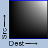
Multiply (  ) (make white transparent for diagrams/text)
) (make white transparent for diagrams/text)
Is one of the more useful, but under-rated, compose methods and is a simple multiply of the two images. Its formula is of course: Src*Dest This means that if one of the images is pure white, the result will be the other image. On the other hand if one image is black the result will be black. Between these extremes one image will darken the destination image by the amount given. Note that 'Multiply' will only darken an image, it will never brighten it. That is, it 'attenuates' an image toward black, which makes this compose method a 'Burn' style of composition. (See Lighting Composition Methods below)
|
![[IM Output]](label_white.gif) ![[IM Output]](compose_multiply.gif)
|
0.5", or an Evaluate PowerOf operation with a value of "2.0". For example see a Star Generator, to produce a more realistic distribution of star intensities. Or it can be used on satellite cloud images before overlaying the result on a geographical map. ![[IM Output]](gradient_op_screen.png)
Screen (make black transparent for diagrams/text)
This is almost exactly like 'Multiply' except both input images are negated before the compose, and the final result is also then negated again to return the image to normal. In technical terms the two methods are 'Duals' of each other. That makes its formula: 1-(1-Src)*(1-Dest) This means that if one of the images is pure black, the result will be the other image. On the other hand if one image is white the result will be white. Between these extremes one image will lighten the destination image by the amount given. Note that a 'Screen' composition will only make an image brighter, never darker. This is a style of composition known as 'Dodge' composition. (See Lighting Composition Methods below) This composition method is perfect for overlaying white text on a black background, then onto other images...
|
![[IM Output]](label_black.gif) ![[IM Output]](compose_screen.gif)
|
![[IM Output]](gradient_op_bumpmap.png)
Bumpmap (greyscale multiply)
The 'Bumpmap' method is essentially the same as 'Multiply', except that the source image is converted into grey-scale before being overlaid. In other words, it will darken the image anywhere the source image is dark. You could think of this as a 'multiply by intensity' type operator. For example...
|
![[IM Output]](compose_bumpmap.gif)
|
hand_point.gif" image is grayscaled before applying. Its original purpose is to add texture (like a paper or fabric texture) to images. However as it can only darken images, it is not as useful as the 'HardLight' method which can both lighten and darken images (see below). ![[IM Output]](gradient_op_divide.png)
Divide, Divide_Dst, Divide_Src (  ) (removing shading effects)
) (removing shading effects)
The two images are divided from each other. Which image divides which depends on if 'Divide_Src' or 'Divide_Dst' is applied. The formula for 'Divide_Dst' is Src / Dest and for 'Divide_Src' is Dest / Src Due to the order of images normally defined in image composition, and the "magick composite command, the original method 'Divide meant...
{Source} Divide {background}
Divide' is a synonym for "Divide_Dst" meaning "divide by destination". It is also the operator used to define the displayed gradient chart. Note that the order of the images is very important as you get very different results if the images, or the operator are swapped. This is especially the case with the "magick" command, which has the destination image before the source image. Remember it is the destination image will define the actual final size, and the meta-data in the resulting composition of the two images. Also remember it is the source image that is positioned relative to the destination image. This composition method is of greatest practical use in the Removal of Vignette from Photographs. In the next example I will use it as a means of background removal.As normalized color values are used and these normally range from 0.0 (black) to 1.0 (white), division will in fact brighten the numerator image, by the amount of 'black' that appears within the image you are 'dividing by'. Now dividing to images, so the 'numerator' image (the one not specified by the operator) is brightened, may sound weird. It is however a very useful operation. It means you can effectively remove dark patches from an image caused either by lens vignetting, bad scanning, or tinting caused by age. For example, I have an image of hand written text which was very roughly scanned (using a digital camera without flash, then reduced in size to remove digital noise). The paper has faded edges, and as a flash was not used the background is very dark, and has shading effects because the paper wasn't completely flat.
![[IM Output]](../images/text_scan.png)
magick text_scan.png -normalize text_scan_norm.png |
![[IM Output]](text_scan_norm.png)
magick text_scan.png \( +clone -blur 0x20 \) \
-compose Divide_Src -composite text_scan_divide.png
|
The divide operators are actually the similar to the '
Color_Dodge' composition method, but with the divisor image negated, and used as the source image. This is the composition that it typically used in Photoshop, however it may require you to Swap and Negate images. See 'Color_Dodge' for equivalences.
Before IM v6.6.8-5 only the original 'Divide' method was provided (equivalent to the newer 'Divide_Dst'). |
![[IM Output]](gradient_op_plus.png)
Plus (  ) (Add colors together to form a blend)
) (Add colors together to form a blend)
Add the colors of the overlay to the background. In essence causing the two images to blend together equally. Its formula is naturally: Src + Dest Note however that if the added colors overflow the color limits, the color will be clipped by the normal color range limits. This is why half the image in the resulting gradient image is pure white, as these values were clipped at their maximum value. Caution is recommended to ensure that the resulting image is not clipped if that is not wanted. The operator has a number of major uses. Merging together images which contain separate channel colors, but where only the individual channel has color. For example...
magick -size 60x60 xc:none -fill red \
-draw 'circle 30,21 30,3' compose_R.png
magick -size 60x60 xc:none -fill lime \
-draw 'circle 39,39 36,57' compose_G.png
magick -size 60x60 xc:none -fill blue \
-draw 'circle 21,39 24,57' compose_B.png
magick composite -compose plus compose_R.png compose_G.png compose_plus_RG.png
magick composite -compose plus compose_R.png compose_B.png compose_plus_RB.png
magick composite -compose plus compose_G.png compose_B.png compose_plus_GB.png
magick composite -compose plus compose_R.png compose_plus_GB.png \
compose_plus_RGB.png
|
![[IM Output]](compose_R.png)
![[IM Output]](compose_G.png) 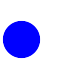
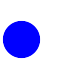![[IM Output]](compose_plus_RG.png) 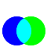
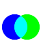 ![[IM Output]](compose_plus_RGB.png)
Due to IM's compliance to the SVG standard, 'green' is not a true green color (like it is in X11 color names) but a dark or half bright green. A true RGB green can be specified with the color 'lime' as we have done in the above example. |
Plus' is sometimes used to add white text to an image. This is NOT correct usage, and may result in some anti-aliasing inconsistencies. The better way is to use the 'Screen' compose method. This uses a multiplication rather than an additive method of increasing brightness. The Linear Dodge Compose Method is is equivalent to 'Plus', but using the more normal 'Over' alpha blending.
Plus and Plus Blending
What makes the 'Plus' more important is that it is about the only mathematical operator that implements a different blending function than 'Over' blending. It not only 'adds' the colors but it also 'adds' the alpha channel values, and is about the only operator that does this, by default. This is important as it allows for the correct joining of complementary masked images. For example, see the merging of Dst In and Out images. It also allows you to use transparency to generate a weighted average or Blend of two images. If it wasn't for this special blending method of 'Plus', these special transparency handling techniques would not be normally possible.As of IM v6.6.1-6 the ability to use the mathematical operator on alpha channels was added to all the Mathematical Compose Methods simply by removing the default '
Sync' flag from "-channel" setting, (simply specify the specific channels you want to apply it to). See Image Channel Mathematics using Image Composition below. This means the 'Plus' operator is the only Mathematical Compose Methods operator not effected by this feature, as it is already applied by default.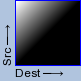
Minus, Minus_Dst, Minus_Src (  )
)
The result is one image subtracted from the other. Which image is the subtracted from the other depend on if 'Minus_Src' or 'Minus_Dst' is applied. Specifically 'Minus_Dst', means 'subtract the destination' or if applied in a "magick composite" command.... The formula for.. 'Minus_Dst' is Src - Dest and for 'Minus_Src' is Dest - Src Due to the order of images normally defined in image composition, and the "magick composite command, the original method 'Minus meant...
{Source} Minus {background}
Minus' is a synonym for "Minus_Dst" meaning "minus the destination". It is also the operator used to define the displayed gradient chart. For example, subtract a circle from the final result of the previous 'Plus' operation above.
|
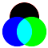 |
Plus'. See Mathematical Composition and Alpha Blending. This handling can be modified by the use of a special 'Sync' channel flag. See Image Channel Mathematics below for details. The 'Linear Burn' compose method can also be used for color subtraction, but works by the user negating the image to be subtracted. See the Linear Burn Compose Method for more details.
Before IM v6.6.8-5 only the original 'Minus' method was provided (equivalent to the newer 'Minus_Dst'). |
![[IM Output]](gradient_op_modulusadd.png)
ModulusAdd
The 'ModulusAdd' is much like the 'Plus' except when the result exceeds white, it is wrapped (modulus) back to black. For example, if we add two grayscale gradients the brightest colors will wrap to form a second gradient.
|
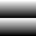 |
|
![[IM Output]](gradient_diagonal.png)
|
|
![[IM Output]](gradient_venetian.png)
|
gray50' to effectively 'roll' the gradient half a modulus cycle forward. 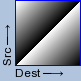
ModulusSubtract
The 'ModulusSubtract' operator is the same as 'Minus' except that it is a modulus subtraction. Subtracting 'white' from 'gray' will result in the original 'gray', and not black, as the values wrap back around. A side effect of modulus subtraction is that some parts may become white instead of black, in seemingly uncontrolled ways.
|
![[IM Output]](compose_subtract.png)
|
ModulusAdd' with a Negated Image will produce the same result. 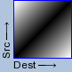
Difference (image compare, and selective negate)
The resulting image is the absolute difference in the color values. Its formula is:abs(Src - Dest) The 'black' and 'white' difference will produce a maximum result of white while any colors which are the same will produce black. Basically a simple form of image comparison. The more common use of this composite method is for comparing two images of the same size to see how they differ, and even produce a percentage of that difference. This operator is typically used to generate Comparison Difference Images. The operator also can be used to selectively negate an image. Overlaying black has no effect on the background, while overlaying white negates the colors in the image at that location. In otherwords this operator (as well as the next) provides an image mapped Negatation operator.
For example lets negate half the rose image.
|
![[IM Output]](black_n_white.gif) ![[IM Output]](compose_negate.gif)
|
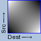
Exclusion (image difference excluding greys)
Its formula is:Src + Dest - 2*Src*Dest This is sort of an averaged difference. White on white will produce black (no difference), the same with black on black. However grey on grey will produce a grey result. White and black naturally still produce white (maximum difference). Another way of looking at this is that bright image regions cause inversion to the respective other layer. Very dark regions change nothing at all. In this manner the Exclusion method is the same as 'Difference' (see previous). One use for this operator is to multiply 'biased gradients' such as used for Displacement Maps. These are gradients where a 50% gray value is thought of as being 'zero' with darker colors representing a 'negative' value, and lighter colors representing a 'positive' value, with the values ranging from -1 to +1. See Multiply Biased Gradients, for details. Another use of this compose method, submitted by Joe Fry, is a way to merge multiple difference images together. The final image shows the changes of all the images, not just between two images. That is, given images A, B and C, first generate the difference images for A, B and B, C then use exclusion on those results so that you get one image showing how all three images changed. This method is also closely related to how the Xor composition blending operator handles the alpha transparency values. 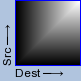 ![[IM Output]](gradient_op_lighten.png)
Lighten and Darken (select maximum/minimum value)
Compare the source and destination image color values and take the respective lighter or darker value.| The formula for Lighten is: | If Src > Dest |
then Src |
else Dest |
One use of 'Lighten' is to compose a blurred version of the original image so that the 'highlights' in the original image get a soft glow about them.
magick flower_sm.jpg \( +clone -blur 0x3 \) \
-compose Lighten -composite flower_softglow.jpg
|
![[IM Output]](../img_photos/flower_sm.jpg)
![[IM Output]](flower_softglow.jpg)
These operators work by comparing and selecting the individual RGB channel values, and as such this could result in some color distortion, especially when dealing with primary colors of the image. For example, here I have create a red and blue gradient image, then use lighten to compose thme together.
magick -size 100x100 gradient:red-black -rotate 90 red_gradient.png
magick -size 100x100 gradient:blue-black blue_gradient.png
magick red_gradient.png blue_gradient.png \
-compose Lighten -composite lighten_by_value.png
|
![[IM Output]](red_gradient.png) 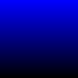
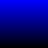 ![[IM Output]](lighten_by_value.png)
Lighten' composition works by color values, the result is just a simple merge of the red and blue images, to produce a red-blue gradient image. That is, the above was equivelent to a simple Channel Copy Composition. One method to prevent color distortions, is to restrict the operator to only adjusting the 'Lightness' channel of the image using HSL Colorspace. Though that does not always produce good results.
Note that "Gimp", "Photoshop", "PhotoLine", "Paint Shop Pro", all compare channels directly just like IM." Photo-Paint" compares the images by color intensity and uses that to decide which image to select colors from, thus preserving color integrity. See Lighten-Intensity Method below.On the other hand " Picture Publisher", and "PhotoImpact" use the color lightness (as defined by the HSL colorspace) for the comparison.For comparisions of the difference in gray-scale from various colorspaces see the example Gray-Scaling using Colorspace. |
Lighten-Intensity and Darken-Intensity (select color by intensity)
As on IM v6.6.9-5, a 'Lighten_Intensity' and 'Darken_Intensity' variant was added. This will compare the intensity of the pixels in the two images, than select the pixel values based on that result. That means no new colors will be added to the images, though new image will be a mix of the colors from both images. Also image order does not matter, except that the size and meta-data comes from the destination image. For example, here take the lighter of images containing a Red and Blue gradient.
magick red_gradient.png blue_gradient.png \
-compose Lighten_Intensity -composite lighten_intensity.png
|
![[IM Output]](lighten_intensity.png)
| This composition method is not defined by the SVG composition guide (2009) used by all the previous composition methods we have looked at so far. As such their is no real definition as to how the alpha channel should effect the pixel comparision. |
With regards to alpha, the method has two modes of operation. With the special '
Sync' flag of the "-channel" setting enabled (the default), the comparison will be based on the intensity of the colors, weighted by the alpha (transparency) channel. That means a 'Half-Transparent White' will have a weighted-intensity that is about the same as a 'Opaque Mid-Gray' color.
This means that all other things being equal, a 'Lighten_Intensity' will create a 'union' of shaped images, while 'Darken_Intensity' will create a 'intersection' of (at least non-black) shaped images. This is NOT ideal, and may change, but its better than no alpha input.
Sync' channel flag (see Using the 'Sync' Flag below). For example by using "-channel All". The pixel selection will then be based purely on the color intensity, without any effect of alpha weighting. However alpha channel value will be copied with the pixel data that was actually selected. For images without transparency the result will be the same regardless of the mode. This second mode also allows you to use a more restricted "-channel" defining which channels may be copied from the source into the destination image, if selected. The selection however will still be purely based on just the un-weighted color intensity. This means that you can more easilly create a 'shape mask' of the selection, based on the intensity of colors in the two images. You compare the images based on color intensity, but only care about the alpha channel value in the result. To make a 'mask' you would make one image fully-transparent (but still having color), using Alpha Transparent, and the other image full-opaque (the default). At the end you can use Alpha Extract to get the mask of which image had the lighter color for that pixel position.
|
![[IM Output]](lighten_intensity_mask.png)
|
| Added as of IM v6.6.9-5. But no formal defintion for the method has been found. As such the current implementation is classed as highly experimental, and may change based on user suggestions. However the essentual idea is sound. |
Intensity Alternative for older versions of IM
If the 'Lighten_Intensity' method is not available to your version of ImageMagick, you can recreate a pure, color-only version, by using 'Lighten' on a gray-scale copies of the two images, and by comparing the result against the gray-scale copy, create a selection mask to apply against the original. This is not easy, and the following is is one such solution...
|
![[IM Output]](intensity_lightened.png)
|
Darken_Intensity' version, replace the "-delete 1" with "-delete 0", OR, replace "-compose Lighten" with "-compose Darken". Either will work.
Set Theory Equivalent Operations
A number of the mathematical methods above are also used to perform set theory or boolean operations with shapes. The 'Lighten'compose method can be used to find the 'Union' (Boolean 'Or') of two (or more) groups (sets) or pixels.
magick -size 64x64 xc: -draw 'circle 22,32 5,32' -negate circle_left.gif
magick -size 64x64 xc: -draw 'circle 41,32 58,32' -negate circle_right.gif
magick circle_left.gif circle_right.gif \
-compose Lighten -composite circle_union.gif
|
![[IM Output]](circle_left.gif)
Darken' compose method produces an 'Intersection' (Boolean 'And') of the pixels.
The 'Difference' compose method produces an 'Exclusive OR', (Boolean 'XOR') of the two sets.
An 'Exclusion' method could also have been used for this purpose, though handles gray-scale (non-boolean) values differently. It is however the method used for 'XOR' Duff-Porter alpha blending. And lastly 'Minus' can be used to generate the 'Relative Complement' of two sets of pixels.
Note that a "![[IM Output]](circle_complement.gif)
{kind=link}
{kind=link}
{kind=link}
{kind=link}
{kind=link}
{kind=link}
{kind=link}
{kind=link}
{kind=link}
{kind=link}
{kind=link}
{kind=link}
{kind=link}
{kind=link}
{kind=link}
{kind=link}
{kind=link}
{kind=link}
{kind=link}
{kind=link}
{kind=link}
{kind=link}
{kind=link}
{kind=link}
{kind=link}
{kind=link}
{kind=link}
-clamp" may be needed for HDRI versions of ImageMagick when applying any of the above 'set' or 'boolean' composition methods, to prevent the generation of out of range values.
Mathematical Composition and Alpha Blending
You can use the above mathematical composition methods for performing mathematical operations on image. However there is on major cave-at with this. It will probbaly not work as you might want with images containing transparency. By default almost all the above mathematical compositions follow a convention defined by the SVG specification. SVG composition guide (2009). What this means is that if you try to use mathematical compositions on images with an alpha channel (that is some form of transparency), you will may not get a true mathematical composition, but a 'blended' form of composition. For example, here I create gradient images with some transparency around them. I then 'Multiply' them together.
magick -size 64x64 xc:none -draw 'rectangle 20,0 43,63' \
gradient: -compose In -composite alpha_src.png
magick alpha_src.png -transverse alpha_dst.png
magick alpha_dst.png alpha_src.png \
-compose Multiply -composite alpha_result.png
|
![[IM Output]](alpha_src.png) Source |
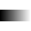 Dest |
Result |
{kind=link}
{kind=link}
| The Plus Composition is the only Mathematical Compose Method that does not do 'over alpha blending'. Instead as per the SVG Specification it separately adds each channel. However the color channels are still weighted by the alpha value before being added, only the handling of the alpha values (the blending) differs. This is important to provide correct 'addition' of masked shapes, such as demonstrated in DstOut Composition. |
Image Channel Mathematics using Image Composition
If the image you are using a Mathematical Compose Methods on are simply fully-opaque gray-scale images, then you can use the above methods on them directly, without any problems. However by default the compose methods will be applied to all the color channels, with alpha blending, just as you saw above. This makes applying them to just a specific channel such as the alpha channel difficult. For example, here I 'Multiply' two images black images containing a transparent gradient. Using the default "-channel" setting.
magick -size 64x64 gradient:black-none alpha_grad_src.png
magick alpha_grad_src.png -transverse alpha_grad_dst.png
magick alpha_grad_dst.png alpha_grad_src.png \
-compose Multiply -composite alpha_grad_result.png
|
![[IM Output]](alpha_grad_src.png) Source |
![[IM Output]](alpha_grad_dst.png) Dest |
![[IM Output]](alpha_grad_result.png) Result |
Black' with 'Black' is 'Black', so the color does not change in this example. Only the resulting transparency is modified. However the result is defiantly not a multiplication of the images alpha channel values, as by the SVG Definition the semi-transparencies are blended using the 'over' method. This is mathematically equivalent to a 'Screen' composition of the alpha channel, and not a multiply.
Sync Channel Flag and Mathematical Composition
As of IM v6.6.1-6 the Mathematical Compose Methods were modified to obey the 'Sync' flag of the "-channel" setting. This flag effectually means, "synchronise the color and alpha channel operations". The default "-channel" setting is 'RGBK,Sync'. So by default Color and Alpha channels are handled appropriately, 'in sync', as per the SVN specification. However by removing the 'Sync' flag, the Mathematical Compose Methods will become 'channel operators' applying the mathematical function to each channel, separately.
|
{kind=link}
All this only applies to Mathematical Compose Methods (as detailed above) as well as the special '
Mathematics' compose method (see below). It does not apply to other composition methods, such as Lighting Composition Methods (see next). At least not yet. The 'Sync' flag also effects how the Lighten/Darken by Intensity Composition Method (not a SVG defined composition method) deals with alpha channel (above). For more information on using image mathematics, see Mathematics on Gradients. More specifically those examples look at using mathematical compositions for generating Biased Gradient Images, which is bit more involved.
Lighting Composition Methods -- Light, Dodge, Burn
These methods modify the colors of an image in highly complex ways and are typically used to adjust the shade or intensity of the image making some areas brighter and others darker.- Lighting Composition methods fall into three sub-categories of related operators.
- 'Burn', which generally darkens images.
- 'Dodge', which generally brightens images.
- 'Light', which both darkens and lightens images based on the the darkness and brightness of one of the images.
Multiply' (darkens colors) is generally regarded as a pure 'Burn' composition operation, while 'Screen' (lightens) is a 'Dodge' composition operator. Generally one of the images will consist of either a color pattern or photo, while the other is a grey-scale image that is being used to brighten or darken the image appropriately. Which image should be the color, and which gray-scale, is debatable and depends on how the method was implemented. There is no standard in this regard, so caution and experimentation is recommended. As a consequence of the lack of standards for these operators, many users do not understand or miss-use these operators. I have also yet to find any guide on correctly using these compose methods is practically non-existent, so I had to do my best with the examples below. ![[IM Output]](gradient_op_overlay.png)
Overlay (add color to a gray-scale object)
This compose method is very unusual in that it has been designed to both 'Multiply' (darken) and 'Screen' (lighten) an image at the same time. Which method is applied to a specific pixel is selected by the value of the destination image, which can be regarded as being the 'lighting mask'. Because of this the destination is generally a greyscale image, to which color is being added.
| Its formula is: | If Dest <= 0.5 |
then | 2*Src*Dest |
| else | 1-2*(1-Src)*(1-Dest) |
magick -size 64x64 gradient:yellow-blue gradient_yell-blue.jpg
magick -size 64x64 gradient: -rotate 90 gradient_grey.jpg
magick gradient_grey.jpg gradient_yell-blue.jpg \
-compose Overlay -composite compose_overlay_gradients.jpg
|
![[IM Output]](gradient_grey.jpg) Dest |
![[IM Output]](gradient_yell-blue.jpg) Overlay |
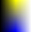 Result |
{kind=link}
Multiply' or 'Screen', is not associative.
magick gradient_yell-blue.jpg gradient_grey.jpg \
-compose Overlay -composite compose_overlay_gradients2.jpg
|
|
Dest |
Overlay |
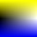 Result |
{kind=link}
-shade" operator. However you need to be very careful to generate a perfect mid-tone grey from that operator, to get correct coloring on areas without any highlights. See Shade Overlay Highlights for details. For example, given a circle we can shade it to produce 3 dimensional effects then tint the result with the original image to restore the original colors.
magick -size 64x64 xc:dodgerblue \
-draw 'fill skyblue circle 32,32 7,27' circle_blue.jpg
magick circle_blue.jpg -shade 120x30 -auto-level circle_shaded.jpg
magick circle_shaded.jpg circle_blue.jpg \
-compose Overlay -composite circle_shaded_tinted.jpg
|
![[IM Output]](circle_shaded.jpg) Dest |
![[IM Output]](circle_blue.jpg) Overlay |
![[IM Output]](circle_shaded_tinted.jpg) Result |
Overlay' method see the "levels_3d" image on the Background Generator Examples page. The biggest problem with this compose method is that any transparency in either image will not be preserved. That is, what is visible in either image will be visible in the result. Typically this operator is used on image that contain no transparency, it usually means you may need to do some extra steps to restore the transparency of the destination or background image. One simple way of preverving the transparency is to simply Turn off the Alpha Channel of the destination image, and thus make it inaccessable. When the composition is complete, you can just Turn It On Again. An example of this is given in Shaded Shape Images. Another method is to save a 'mask', or a copy of the original image, and then use that mask or image to restore the transparency. Examples of doing this is provided in Overlay Color Tinting. Or in the more complex example Better 3-D Logo Generation.
| Up until IM version 6.1.6 the 'Overlay' compose method was broken in that it would only produce pure black or white results (most likely you would only get a pure black result). Consequently most IM users had little chance of understanding this operator. now that this have been fixed users will now be able to make good use of this method. |
![[IM Output]](gradient_op_hardlight.png)
Hard_Light (add texture or highlight/shadow to an image)
This is the same as 'Overlay' except the source and destination images are swapped. If you compare the gradient images of these two operators you can see that the gradient is diagonally transposed, showing the swap of the source and destination inputs.
| Its formula is: | If Src <= 0.5 |
then | 2*Src*Dest |
| else | 1-2*(1-Src)*(1-Dest) |
Overlay' can add color to a gray-scale shaded object, 'Hard_Light' adds gray-scale lighting effects to an image. Which method you use depends on how you are thinking in terms of adding image lighting effects. The important difference is which image is the 'destination' image so as to preseve image meta-data, or even temporarilly Disable the Alpha Channel to preseve it during the operation. For example, here I generate a 'lighting effect' using a blurred "-raise" operation of a pure gray image the same size as the original. This is then composed using 'Hard_Light' to add those lighting effects to the image.
magick rose: -fill gray50 -colorize 100% \
-raise 4 -normalize -blur 0x4 lighting_effect.png
magick rose: lighting_effect.png \
-compose hardlight -composite compose_hardlight.png
|
![[IM Output]](../images/rose.png) Dest |
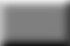 Overlay |
![[IM Output]](compose_hardlight.png) Result |
{kind=link}
|
![[IM Output]](compose_texture.png)
|
Hard_Light'. To combat this you may like to mute the contrast of an overlaid texture.
|
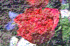 |
{kind=link}
Soft_Light' may also produce better results more directly. For a better example see Overlying a Texture in the Photo Cookbook. A real life example in using 'Hard_Light' shading is provided an IM Discussion Forums on the generation of 3D DVD covers from flat source images. Remember that both 'Overlay' and 'Hard_Light' shading are essentially the same composition method. The only difference is the images order. ![[IM Output]](gradient_op_softlight.png)
Soft_Light (softer highlighting of an image)
The 'Soft_Light' compose method will also add highlights and shadows to an existing color image. However, the colors of the destination image are modified to produce a softer contrast, and smoother gradient in lighting effects. If you look carefully at the 'greyscale map image' (see right) you will see no sharp discontinuity, though there actually is two of them. (See also 'Pegtop_Light' next). It is more closely related to the 'Overlay' composition than to 'Hard_Light', so the destination is typically the greyscale lighting mask. Whether this is intentional or not is unknown but it does make it different to 'Hard_Light' but it means you are better off composing the main image onto the shading image rather than vise-versa. :-(
WARNING: This lighting effect defined more like 'Overlay' rather than 'Hardlight'. However which should contain the gray-scale lighting image is unclear. Using source can produce full black and white results, using destination however can not produce these extremes.If anyone has some definitive reference, please let me know. |
Soft_Light' texture mapping.
|
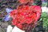 |
{kind=link}
granite:" image, the color changes are softer and less intensive than that of 'Hard_Light', or even 'Overlay'. However you also will never get any pure black shadow or pure white highlights, added to the resulting image. Basically 'Soft_Light' has a softer texture effect, which preserves the original coloring of the source image.
Here I show the color changes achieved as a result of using pure black, white and a perfect-gray color overlays.
|
![[IM Output]](grayscale_3.gif) ![[IM Output]](compose_softlight_2.gif)
|
Hard_Light' the sides of the image would be pure black and white, rather than just a 50% darkening or brightening.
Before IM v6.5.4-3 'Soft_Light' did not work as expected, producing a brightening for any non-gray shade image overlay. In actual fact I confirmed that it was implemented correctly according to the official 2004 SVG specification.Unfortunately, it was the specification, not the implementation, that was incorrect. It was fixed in the March 2009 SVG specification. As such for IM v6.5.4-3 and later this operator now works as you would expect a light shading operator to work. |
![[IM Output]](gradient_op_pegtoplight.png)
Pegtop_Light (a smoother variation to soft light)
While 'Soft_Light' is much smoother than either 'Hard_Light' or 'Overlay', it is still actually based on two separate functions joined together. The 'Pegtop_Light' method produces a near identical result as 'Soft_Light' but uses a single smooth function without any discontinuity, not even the two minor ones used by 'Soft_Light'. Because of this it is actually much simpler and faster. Its formula is: 2*Src*Dest + Src2*(1 - 2*Dest) For details see the Pegtop SoftLight Alternative page.
WARNING: This lighting effect defined more like 'Overlay' rather than 'Hard Light'. |
The 'Pegtop_Light' compose method was added to IM version 6.5.4-3. |
![[IM Output]](gradient_op_linearlight.png)
Linear_Light (A very simple but strong shading scheme)
Another image shading method that is very sensitive to the overlaid shading image. It has much larger zones of pure black and white limits. Its formula is:2*Src + Dest - 1 While it is a continuous function, it could really be considered a combination of 'LinearDodge' (equivalent to a 'Plus' composition) and 'LinearBurn' (which is an offset 'plus' sometimes used to subtract images).
Before IM v6.5.4-3 'Linear_Light' was proved to be incorrectly implemented. |
{kind=link}
Vivid_Light (a variant of Linear Light)
The 'Vivid_Light' method is the same as that implemented in Photoshop 7, and is basically a minor refinement on the 'Linear_Light' method. What it does is avoid shading the extremes, so as to make strong primary colors in the images more 'vivid'.
| Its formula is: | If Src <= 0.5 |
then | 1-(1-Dest)/(2*Src) |
| else | Dest/(2*(1-Src)) |
Color_Dodge' and 'Color_Burn', for extremes, but 'Linear_Light' for the mid-tones.
The 'Vivid_Light' compose method was added to IM version 6.5.4-3. |
{kind=link}
Pin_Light
The 'Pin_Light' function is designed to better preserve the mid-tones of the destination image, restricting its shading to the lighter and darker overlay shading. Supposedly this simulates the harsh and sharp lighting changes that result from a tiny pinhole light source, rather than a more diffuse 'softer' light source.
| Its formula is: | If | Dest < 2*Src-1 |
then | 2*Src - 1 |
| elif | Dest > 2*Src |
then | Dest |
|
| else | 2*Src |
The 'Pin_Light' compose method was added to IM version 6.5.4-3. |
{kind=link}
Linear_Dodge (Photoshop 'Add' Compose)
If you compare the gradient image (right) for 'Linear Dodge' with that of 'Plus' you will find that for two opaque images they have the exact same effect. Its formula is of course: Src + Dest That is, for images with no transparency, these two commands with images 'A' and 'B produce the same resulting image 'R'...
magick A B -compose Plus -composite R magick A B -compose LinearDodge -composite R |
The 'Linear_Dodge' compose method was added to IM version 6.5.4-3. |
![[IM Output]](gradient_op_linearburn.png)
Linear_Burn (A Photoshop 'Subtract' method)
The 'Linear Burn' compose method is an 'Add Minus One' composition, that produces the same result as if you negated all the input and output images of a 'Linear Dodge' or 'Plus' compose method. Its formula is: Src + Dest - 1 In Photoshop this is not only known as 'Linear Burn' but also as 'Subtract'. That is, because if you Negate one of the input images (such as the source image), that image is subtracted from the other image. For example here is the resulting maths when you negate the source image...
(1-Src) + Dest - 1 ==> Dest - Src
A' and subtract image 'B produce the same resulting image 'R'...
magick A B -compose minus_src -composite R magick B A -compose minus_dst -composite R magick A \( B -negate \) -compose linear_burn -composite R magick B -negate A -compose linear_burn -composite R |
Linear Burn' will subtract from the other. It does not matter if the image is the source or the destination image. In some ways it make this compose method more versatile. For example, here I subtract an image of a circle on the right (which I negate), from the one on the left.
magick circle_left.gif \( circle_right.gif -negate \) \
-compose LinearBurn -composite circle_subtract.gif
|
![[IM Output]](circle_subtract.gif)
Linear Burn' can not be applied directly to the alpha channel of images, where as the more Mathematical Compose Method Minus can.
The 'Linear_Burn' compose method was added to IM version 6.5.4-3. |
{kind=link}
Color_Dodge (photoshop division)
This composition method uses the source overlay image as a mask that sort of protects the background image from "light exposure" over long periods of time. The parts exposed to a lighter mask is made lighter, (or dodged), while black areas produce no change. You could think of it as placing an object on top of an photo for a very long time, causing the parts exposed to light to slowly whiten with age, while the parts that were covered remain as they were. A pure black overlay does not change the image while a pure white overlay will make all the background colors white, except for those that were pure black. However unlike either 'Screen' (inverted multiply) or 'Linear_Dodge' (add) dodge compose methods, a pure black or all white destination image will remain uneffected by the lighting mask. In other words only areas containing grays and non-pure color is affected. Its formula is: Dest / (1-Src) example and practical use needed hereIn actual fact 'ColorDodge' and the two 'Divide' operators can produce the same results. 'ColorDodge' however requires the image being used as a 'divisor' to be negated and used as a 'source' image for the operator. For example all these commands operating on images 'N' (numerator) divided by the 'D' (denominator) produce the same resulting image 'R'... Assuming all the images are the same size.
magick N \( D -negate \) -compose ColorDodge -composite R magick N D -compose DivideSrc -composite R magick D N -compose DivideDst -composite R |
Divide' for an example of how dividing images can be used for the removal of a background gradient. ![[IM Output]](gradient_op_colorburn.png)
Color_Burn
This is the reverse of 'Color_Dodge', equivalent to inverting all the input and output images. The result is that the background image is darkened by a dark masking image, while white produces no darkening. However unlike either 'Multiply' or 'Linear_Burn' burn compose methods, a pure black or all white destination image will remain uneffected by the lighting mask. In other words only areas containing grays and non-pure color is affected. Its formula is: 1 - ( (1-Dest) / Src) example and practical use needed hereThis command is equivelent to the previous set of formulas to implement a division of images. Note the final negation in the command.
magick N -negate D -compose ColorBurn -composite -negate R |
Color_Burn' is to clean dark gradient backgrounds to pure black. Much like 'Color_Dodge' can divide backgrounds to white.
Before IM v6.5.4-3 'Color_Burn' was proved to be incorrectly implemented. |
Channel Copying Methods
These image composition methods are designed to transfer image channel information from one image to another. It however makes some assumptions about the image from which the 'channel' is being copied. I suggest you read the sections Image Color Space and Color Channel Operators to understand how IM represents image color channels in memory before using them. The most useful channel copying composition methods is 'Copy_Opacity' (see below). It is simplist way to completely replace (or add) just the alpha channel to an existing image using a separate greyscale mask image.
Copy_Opacity (Set transparency from gray-scale mask)
The original purpose of the 'Copy_Opacity' operator was to copy the transparency channel of the source image into the destination image, to set that image's transparent parts. This is more commonly done using Duff-Porter operators, which are specifically designed for compositing images with alpha transparencies. For example, if the destination is fully-opaque, which is typical of this operator's use, then either 'Dst_In', or even 'Dst_ATop' operators will achieve the same result. So why is the 'Copy_Opacity' operator so important, when there are alternatives? The answer is how this operator handles a special case. When the overlay (source) image has no alpha channel, then this operator will treat it as a simple grey-scale image mask. That is, it will replace any existing alpha channel of the image with the greyscale image given. In summary anything that is black in the gray-scale image will be thought to be fully transparent, and white fully-opaque. This is so important, and so commonly used, I will make it a rule of thumb...
Copy_Opacity' compose setting.
For example, make a grey scale moon image (which is easy to draw), then use it as a mask for a blue plasma gradient, to produce a nice mottled looking blue moon.
|
![[IM Output]](moon_mask.gif) ![[IM Output]](moon_gradient.png)
|
Dst_In' instead, to subtract the transparent areas of the source overlay from your destination (in which case both images need to have an alpha channel enabled and used. This operator is explained in even more detail in Using a Mask Image with Fonts and in Editing Image Masks. It is also used in many other examples throughout these pages.
Copy_Red, Copy_Green, Copy_Blue
Copy the given color channel of the source image into the destination image. As a gray-scale RGB image has the same data in all three color channels, these methods can be thought of as copying a greyscale channel image to replace the specified channel in the destination image. Much as the 'Copy_Opacity' (see above) can replace the 'alpha channel' of an image with a greyscale image. These channel copying methods are rarely used today thanks to the use of various Color Channel Operators to separate out and re-combine color channels via grayscale channel images. Note that when merging various grayscale gradient patterns very interesting color images can be generated using these operators. For some examples look at the color gradient combinations in raw compose operator tables.
Copy_Cyan, Copy_Magenta, Copy_Yellow
These are synonyms for the same methods in the previous section. Basically as the 'Red' channel in RGB images is also used as the 'Cyan' channel in the CYMK images. The same for 'Green' and 'Magenta' channels, and the 'Blue' and 'Yellow' channels. Because of this copying the 'Cyan' channel is the same as copying a 'Red' channel. What type of channel the image data is representing depends on the current Color Space of the image in memory.
Copy_Black
This also just copies the 'Black' channel from source to the destination, if it exists. However that channel only exists for CMYK images. If the 'Black' channel does not exist this does nothing, which is probably a bug. What it probably should do is copy a grey-scale 'Black' channel image, to the black channel of the destination image (assuming that it exists).
Hue (copy the hue of a RGB image to destination)
This operator copies the hue H of the source image to replace the hue of the destination image, leaving the backgrounds saturation S and luminance L (OR is it luminance Y?) unchanged. This assumes both images are in RGB colorspace image. I have not tested this with a non-RGB colorspace image.Saturate (copy the saturation of a RGB image to destination)
Copies the Saturation S from source to destination, (assuming the image is a RGB colorspace image) leaving the color hue H and luminance L (OR is it luminance Y?) unchanged. This assumes both images are in RGB colorspace image. I have not tested this with a non-RGB colorspace image.Luminize (copy the luminance of a RGB image to destination)
Copies the luminance L (OR is it luminance Y?) from source to destination, leaving the color hue H and saturation S unchanged. This assumes both images are stored using RGB colorspace. I have not tested this with a non-RGB colorspace image.Colorize (copy the color hue and saturation to destination)
Copies the hue H and saturation S from source to destination, leaving the color luminance L (OR is it luminance Y?) unchanged. This assumes both images are stored using RGB colorspace. I have not tested this with a non-RGB colorspace image.Dissolve One Image Over Another
What the "-dissolve" operator does is provide a controlled 'Over' compose method. It adjusts the transparency of the overlay image, before it is overlaid on top of the the background, according to the percentages given.
-
magick composite -dissolve {percent} overlay bgnd result
magick composite -dissolve {src_percent}x{dst_percent} overlay bgnd result
magick bgnd overlay -compose dissolve \
-define compose:args={src_percent},{dst_percent} \
-composite result
Over' compose method) onto the background. Furthermore, if you continue past a value of 100% (also new for IM v6), it will then start to dissolve away the background image. In other words, in the 0 to 100 percent range, the background image is not dissolved at all (with a dst_percent of 100%), while in the 100 to 200 range, the overlay is left as is, (src_percent set to 100%), and the background is dissolved, so it is completely gone when the argument reaches a value of 200%). Here is a table of results with various dissolve arguments...
|
![[IM Output]](../images/star.gif) ![[IM Output]](../images/dragon_sm.gif)
|
| 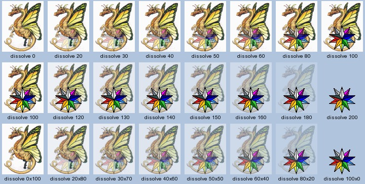 |
{kind=link}
-dissolve" will first slow dissolve a new image over the background, then slowly dissolve away the original background image. Which is very suitable for images containing transparent areas. You can also control the dissolve of the background, so while one image dissolves on top, you can arrange for the background to dissolve away underneath. This is very good, but is not really suitable for a proper slide show style of dissolve between images. As one image is overlaid the images are not merged together equally, and swapping the image arguments (and corresponding dissolve arguments) will produce different results.
|
For the 100% to 200% range, or the second percentage argument to work, the background image must contain an alpha channel. This is especially magick important for JPEG images which do not contain any transparencies by default.
As such it is probably a good idea to tell IM to give all images an alpha channel using the " |
{kind=link}
Dissolve' composition is if one of the images (usually the 'background') is not dissolved (a 100 percent value), and remains opaque. This is why the default is to use a 100 value for the 'background' , at least at first. The following are special cases for specific "-dissolve" arguments...
0x0 |
Both images are dissolved to full transparency. Equivalent to a ' Clear' compose method. |
|
|---|---|---|
0 |
Just the background image unchanged (source made transparent). Equivalent to a ' Dst' compose method. |
|
100 |
A normal overlay of the overlay image onto the background. Equivalent to a ' Over' compose method. |
|
200 |
The overlay image on a blank canvas (background made transparent). Equivalent to a ' Src' compose method. |
-dissolve" compositing method is commonly used as an alternative way of Watermarking with Images, particularly with color watermarks.
Blend Two Images Together
The "-blend" compositing method provides what the "-dissolve" compositing method was originally intended to provide, before it was hijacked for other more basic operations. Where as the "-dissolve" method overlays images on top of each other, "-blend" merges images together such that both images are treated equally (being just added together), according to the percentage arguments given. As such you can achieve the same result (except in final image size) by swapping the percentages and the image arguments. This is not the case with "-dissolve" method. In otherwords, "-blend" is associative (arguments are swappable), while "-dissolve" is not.
magick composite -blend {percent} overlay bgnd result
|
If only a single percentage value is given, it is used as the dissolve percentage for the overlay, while the background image is dissolved by the exact opposite amount. That is, a "-blend 30" will dissolve the overlay by 30%, and the background by 70% before the two images are added together. thus it is equivalent to "-blend 30x70". The result of this is that the opacity of the two images (in the areas overlaid) will still add up to 100%.
|
|
![[IM Output]](blend_montage.jpg)
|
-blend" will let you slowly replace one image with another equally without overlay. If you overlay the result of a blend on a black canvas, say the size of your display, you can easily make a respectable slide show program in which one image slowly dissolves into another. You can also see that because the images are added together (internally it uses the 'Plus' compose operator), you can easily overload the color channel maximums, producing some artifacts. A 100% white color in particular will ensure nothing of the other image will be visible as all colors channels are already at their maximum. It is recommended that in most situations you only need to use the single argument version of blend.
As with "-dissolve", the background image must contain an alpha channel for "-blend" to work correctly, to dissolve the background image.
As such it is probably a good idea to tell IM to Set an Alpha Channel on all images before applying the ' |
-blend" arguments...
0x0 |
Both images are dissolved to full transparency. Equivalent to a ' Clear' compose method. |
|
|---|---|---|
0 |
Just the background image unchanged. Equivalent to a ' Dst' compose method. |
|
100 |
The overlay image on a blank canvas. Equivalent to a ' Src' compose method. |
|
100x100 |
Just the two images added together. Equivalent to a ' Plus' compose method. |
|
50 |
Average of both images. This is equivalent to the "-evaluate-sequence mean" image sequence operator, but with two images. (See also Averaging Images)
|
Blend verse Dissolve
While both Dissolve and Blend will make images semi-transparent "-dissolve" composes the image using 'Over', while "-blend" merges the images using 'Plus'. This may not seem like much, but it can be very important, as it definines how the two composition methods handle parts of the image which are not overlaid, or in areas where the overlay is transparent. For example.
magick dragon_sm.gif star.gif -alpha on \
-compose dissolve -define compose:args=50 \
-gravity South -composite dissolve_50.png
magick dragon_sm.gif star.gif -alpha on \
-compose blend -define compose:args=50 \
-gravity South -composite blend_50.png
|
![[IM Output]](dissolve_50.png) Dissolve |
Blend |
{kind=link}
{dst_percent}' argument, you will also be full-opaque and have the same result. For example, here I merge the 'dragon' image with the built in 'rose' image. I crop both images to the same size, so that both fully-opaque images can fully cover each other.
magick dragon_sm.gif rose: -crop 70x46+0+0 +repage -alpha on \
-compose dissolve -define compose:args=50 \
-gravity South -composite dissolve_50_opaque.png
magick dragon_sm.gif rose: -crop 70x46+0+0 +repage -alpha on \
-compose blend -define compose:args=50 \
-gravity South -composite blend_50_opaque.png
|
|
Dissolve |
Blend |
{kind=link}
Using Blend to Modify a Single Image
Blend is basically an 'interpolation function', or 'weighted average' allowing you to combine two fully-opaque images in a controlled linear way. That is 30% of the source plus 70% of the background, to produce a new 100% opaque image. It can however do more than just combine two images. It can also be used to brighten, set contrast, saturation, colorize and even sharpen a specific image. This use of blend is discussed further in a document found by BugBear <bugbear@papermule.co.uk> on the WWW, Image Processing by Interpolation and Extrapolation a copy of the one on Grafica Obscura (which is not directly linkable from an external source). This document is recommended for further reading on using this function.Extrapolation ability was added to the "-blend" operator in IM v6.3.5-10. |
magick composite -blend 0 rose: -size 70x46 xc:black -alpha Set blend_dark_0.jpg magick composite -blend 50 rose: -size 70x46 xc:black -alpha Set blend_dark_50.jpg magick composite -blend 100 rose: -size 70x46 xc:black -alpha Set blend_dark_100.jpg magick composite -blend 150 rose: -size 70x46 xc:black -alpha Set blend_dark_150.jpg magick composite -blend 200 rose: -size 70x46 xc:black -alpha Set blend_dark_200.jpg |
|
0% |
50% |
100% |
150% |
200% |
|---|
{kind=link}
{kind=link}
{kind=link}
magick composite -blend 0 rose: -size 70x46 xc:'#808080' -alpha Set blend_gray_0.jpg magick composite -blend 50 rose: -size 70x46 xc:'#808080' -alpha Set blend_gray_50.jpg magick composite -blend 80 rose: -size 70x46 xc:'#808080' -alpha Set blend_gray_80.jpg magick composite -blend 100 rose: -size 70x46 xc:'#808080' -alpha Set blend_gray_100.jpg magick composite -blend 120 rose: -size 70x46 xc:'#808080' -alpha Set blend_gray_120.jpg magick composite -blend 150 rose: -size 70x46 xc:'#808080' -alpha Set blend_gray_150.jpg |
|
0% |
50% |
80% |
100% |
120% |
150% |
|---|
{kind=link}
{kind=link}
magick rose: -type grayscale rose_gray.png magick composite -blend 0 rose: rose_gray.png -alpha Set blend_color_0.jpg magick composite -blend 50 rose: rose_gray.png -alpha Set blend_color_50.jpg magick composite -blend 100 rose: rose_gray.png -alpha Set blend_color_100.jpg magick composite -blend 150 rose: rose_gray.png -alpha Set blend_color_150.jpg magick composite -blend 200 rose: rose_gray.png -alpha Set blend_color_200.jpg |
|
0% |
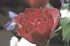 50% |
100% |
150% |
200% |
|---|
{kind=link}
{kind=link}
{kind=link}
magick rose: -blur 0x5 rose_blurred.png magick composite -blend 0 rose: rose_blurred.png -alpha Set blend_blur_0.jpg magick composite -blend 50 rose: rose_blurred.png -alpha Set blend_blur_50.jpg magick composite -blend 100 rose: rose_blurred.png -alpha Set blend_blur_100.jpg magick composite -blend 150 rose: rose_blurred.png -alpha Set blend_blur_150.jpg magick composite -blend 200 rose: rose_blurred.png -alpha Set blend_blur_200.jpg |
|
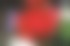 0% |
50% |
100% |
150% |
200% |
|---|
{kind=link}
{kind=link}
{kind=link}
Watermark Option - Compose 'Modulate'
The "-watermark" composite option or the "modulate" compose method, is meant to dis-color images in HSB space for copyright purposes.
magick composite -watermark {brightness}[x{saturation}] overlay bgnd result \
|
0' makes no change in the image brightness, though a value of '100' replaces the brightness with the intensity of the overlay image. That is, if the overlay is black the destination is made black, if white the destination image's color will be fully saturated. The 'saturation' defaults to '100' producing maximum color saturation. If set to '0' the masked area will be de-saturated to black and white. Here is a table of results with various arguments...
|
![[IM Output]](../images/sphinx.gif) ![[IM Output]](../images/cyclops.gif)
|
![[IM Output]](wmark_montage.jpg)
|
-watermark" arguments...
0 |
No change is made to the destination image at all. | |
|---|---|---|
100 |
Destination made black where overlay is black, and fully-saturated color hue where overlay is white | |
0x0 |
The masked overlay area is de-saturated to gray-scale | |
100x0 |
The gray-scale overlay is simply overlaid 'ATop' of the destination. |
Using a Compose Mask to Limit the Composed Area
The "magick composite" command and "-composite" operator will also take a third masking image which will limit the area effected by the "-compose" method. For example given two images, and a mask image you can overlay part of the source image onto the background image, as defined by that mask. Please note however that the background image still defines the final size of the resulting image.
magick composite tile_water.jpg tile_aqua.jpg moon_mask.gif mask_over.jpg |
![[IM Output]](../images/tile_water.jpg)
![[IM Output]](../images/tile_aqua.jpg)
![[IM Output]](mask_over.jpg)
-gravity" and "-geometry" settings will let you re-position the source image, the mask image is NOT re-positioned, and remains aligned with the destination image. So lets just be clear about this...
Any gravity/geometry setting is not applied to it.
magick" version (source and background image arguments are swapped), with the mask image adjusted so as to move it relative to the background image.
|
![[IM Output]](mask_offset.jpg)
|
magick" commands "-composite" operator specifies the destination or background image first. The result is like giving the mask an offset of '+10+25' but with neither the source or background images moving. If you want to align the mask with the source image you may be better off masking the source image separately (using 'Copy_Opacity' or some other technique). Then you can position that result onto the background without alignment problems.
Here is a similar example, but this time I use a gradient mask the same size as the background image so as to blend the two images together, producing a 'shallows' effect.
|
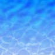 |
{kind=link}
Compose Mask and Transparency
You may think from the above that using a three image composite mask is very much like using the 'Copy_Opacity' to set a transparency of the overlay image, then composite that over your background. And for images without any transparency (such as the above) you would be right. But that is not the whole story. First the mask is tied into the destination image, rather than the source image, so it is not offset or gravity effected. Also unlike 'Copy_Opacity' the mask image is treated as purely a gray-scale image. IM will ignore any and all alpha transparency the mask may have. As such you do not need to worry about Turning Off Alpha Channel" in the mask image. And finally the mask works by limiting the area which was modified, which is very different to just masking the source image. For a simple 'Over' composition, this is the same as if the mask is multiplied with any transparency in the source image, to limit what is overlaid. As such for completely opaque source images you can think of it as the transparency for the source image. For example, overlay two circles as normal then overlay them with a mask limiting the area in which the destination image is changed.
magick -size 60x60 xc:none -fill red -draw 'circle 35,21 35,3' m_src.png magick -size 60x60 xc:none -fill blue -draw 'circle 21,39 24,57' m_bgnd.png magick -size 60x60 xc: -draw 'polygon 0,59 59,0, 0,0' m_mask.png magick composite m_src.png m_bgnd.png m_over.png magick composite m_src.png m_bgnd.png m_mask.png m_over_masked.png |
![[IM Output]](m_src.png)
{kind=link}
{kind=link}
![[IM Output]](m_mask.png)
![[IM Output]](m_over_masked.png)
Src' method to replace the masked area in the destination with the contents of the source image.
|
{kind=link}
FUTURE: Using masked composition to overlay an object in front of a backdrop, but behind some foreground object. Also develop an animated example, of something being obscured by foreground objects in the destination.
The above was a major long term bug involving composite masking when you involved source or overlay images with transparency, and or attempted to use other alpha compositions other than the 'Over' compose method. See Composite Mask Bug for details. |
Compose using Image Tiles
The "-tile" setting in "magick composite" is very different to that same setting in either "magick" or "magick montage". If given it means that the source image is to be tiled over the background image. For example, here we tile a 'color star' over a netscape color map image...
|
![[IM Output]](tile.gif)
|
magick composite" operation. Consequently you can not use it to tile a background image as that would mean IM can not use the background image to set the final size of the result. However you can tile an image under another image using 'Dst_Over' instead.
|
![[IM Output]](tile_under.gif)
|
magick" command. This is a shame as it would make Tiling with an Image already In Memory a lot easier than it currently is. The basic technique for composition tiling using "magick" is to Clone the original image, and tile it using one of the methods given in Tiled Canvases. For example...
|
{kind=link}
Multiply". Also see Using Image Mask, Mathematical Composition.
Special Composition Methods
There are also a few special purpose composition methods that have been added for one reason or another.Mathematics (User Defined Mathematical Compose Method)
This composite method takes 4 numerical values to allow the user to define many different Mathematical Compose Methods. The four arguments, "A", "B", "C", and "D", define the formula...
A*Sc*Dc + B*Sc + C*Dc + D
Sc" is the source or overlay image, and "Dc" is the background or destination image. All four values must be provided. For example, we could generate the equivelent of a 'Multiply' compose method using the values "1,0,0,0".
magick gradient_dst.png gradient_src.png \
-compose Mathematics -define compose:args='1,0,0,0' -composite \
mathematics_multiply.png
|
|
Source |
Dest |
![[IM Output]](mathematics_multiply.png) Result |
Screen: 1-(1-Sc)*(1-Dc) => -Sc*Dc + Sc + Dc => -1,1,1,0
|
![[IM Output]](mathematics_screen.png)
|
LinearLight' which is directly defined using the arguments "0,2,1,-1"...
|
![[IM Output]](mathematics_linearlight.png)
|
| Compose Method | Mathematics Args |
|---|---|
Multiply |
1,0,0,0 |
Screen |
-1,1,1,0 |
Exclusion |
0,1,1,-1 |
Linear_Dodge |
0,1,1,0 |
Linear_Burn |
0,1,1,-1 |
Linear_Light |
0,2,1,-1 |
|
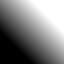 |
{kind=link}
|
![[IM Output]](mathematics_linearlight_3.png)
|
The 'Mathematics' compose method was added to IM version 6.5.4-3. And is currently only available using the "-compose" operator. It is not available from the "magick composite" command due to its need for arguments. |
Change_Mask (Make similar pixels transparent)
This is an unusual method that will only make specific pixels in the destination image full-transparent. That is, the pixels in the destination image that match the given source image, according to the current Fuzz Factor setting. This can be used for example to re-add transparency to an image that was overlaid onto a complex (but very different) background. For example, this was exactly the problem presented by Jesper Eije...
magick overlay_figure.gif overlay_bgnd.gif \
-compose ChangeMask -composite overlay_removed.png
|
![[IM Output]](../images/overlay_figure.gif)
![[IM Output]](../images/overlay_bgnd.gif)
![[IM Output]](overlay_removed.png)
By swapping the two images, so the background image is given as the destination image, you can extract the parts of the background that was replaced or modified by the overlaid image.
|
![[IM Output]](overlay_changed.png)
|
As this composition method only 'clears' pixels to full-transparency, an alpha channel will always added to the resulting image. The color of the destination image is not however cleared as it is in most other Alpha Composition methods. As such you can negate the alpha channel, to get the unchanged colors.
|
![[IM Output]](overlay_unchanged.png)
|
The 'ChangeMask' composition method was added to IM v6.3.4, to provide a method for Optimizing Transparency for GIF Animations. No other existing composition method provided the needed requirements, without combining 3 or more composition methods. Specifically the Boolean (or fuzz factor thresholding) requirement needed for transparency optimization.The result however is so useful in its own right that it was made available for direct use by users, and so defined the name of this rather complex composition method. |
Image Mapping Effect Methods
There are also a couple of special methods that are not strictly composition methods. Rather than directly combining the two images on a pixel by pixel bases, the source or overlap image is a special control map, for some larger effect. While the methods they represent are relatively simple their use is so complex they have their own example section. Image Mapping Effects. These special methods include... The 'Blur' method provides a method of bluring images in different ways on a pixel by pixel bases. It can generate a wide range of DIY image blurring effects. See Variable Blur Mapping for details. The 'Displace' method on the other hand provides both an absolute and relative pixel lookup displacement technique that generates not only specific image distortion methods, but also glass, lens, and ripple, effects. See Distort and Displacement Mapping for details.